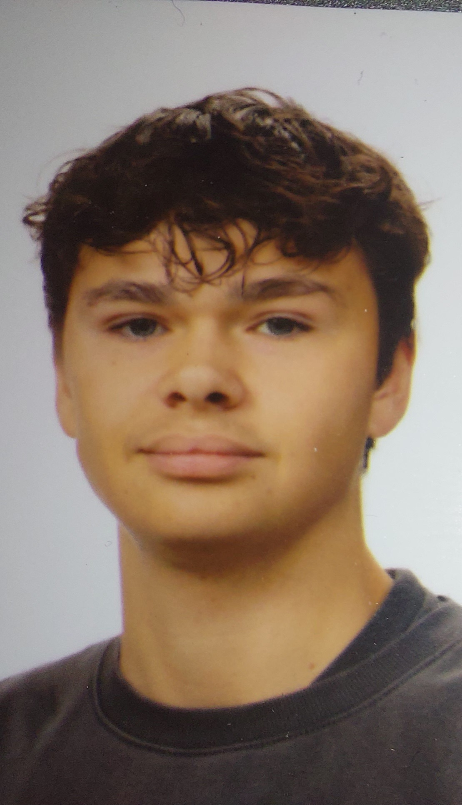

Student systeem- en netwerkbeheer
Thor Arnouts

Ik ben Thor Arnouts, student Systeem- en netwerkbeheer aan de AP-hogeschool met een sterke interesse in automatisatie, programmeren en netwerkbeheer. Tijdens mijn opleiding deed ik ervaring op met TIA Portal, VMware, Wireshark, netwerkmonitoring via Zabbix en nog veel meer.
Ik ben rustig van aard, werk graag in team en blijf steeds leergierig om nieuwe kennis en vaardigheden op te doen. Buiten mijn studies ben ik sociaal actief en sportief, met een passie voor voetbal.